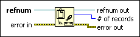
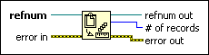

Get Number of Records Function
Owning Palette: Datalog Functions
Requires: Base Development System
Returns the size in records of the datalog file identified by refnum.

 Add to the block diagram Add to the block diagram |
 Find on the palette Find on the palette |
Owning Palette: Datalog Functions
Requires: Base Development System
Returns the size in records of the datalog file identified by refnum.

| Add to the block diagram |
Find on the palette |
 |
refnum identifies the datalog file whose size you want to get. |
 |
error in describes error conditions that occur before this node runs. This input provides standard error in functionality. |
 |
refnum out returns refnum. |
 |
# of records is the number of records in the datalog file. |
 |
error out contains error information. This output provides standard error out functionality. |